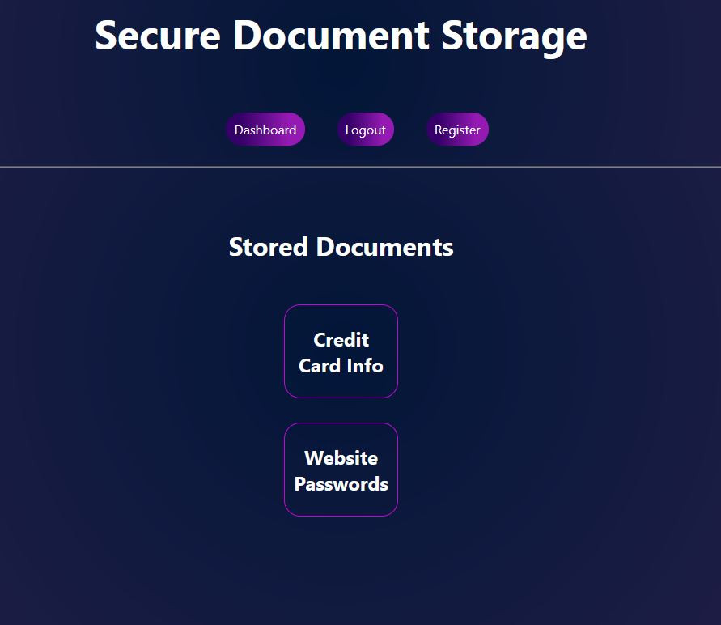

SQL Injection Example Website
A simple Django website, created in collaboration with Sebastien Van Den Brempt (github), to demonstrate how SQL injections work. It features user registration and logging in, and stores documents for the users.
To make the site vulnerable to SQL injections, a custom user authentication backend was added. At the time of writing, this authentication backend is the background of this website. It works by executing the following SQL statement:
"SELECT * FROM auth_user WHERE username = '%s' AND password='%s'" % (username, make_password(password, salt=salt))
If more than one user is found using the query, the first one is returned. This means that to bypass the system's authentication and login as a user, named "Nick" for example, they need only type "Nick' OR 1=='1" into the username box.
The goal of this project was to demonstrate how easy SQL injections are to exploit if a web developer isn't careful. According to wordfence.com, 18% of website hacks involve the use of SQL injections. They are often used to steal sensitive information, such as hashed passwords and credit card numbers.
- Python (Django)
- SQL (SQLite)
- HTML5/CSS
 Repository
Repository
Flashcard Tool


A program used for displaying flashcards. Flashcards are a great way to study and memorize large amounts of information. They allow the user to repeatedly quiz themselves on topics in order to continually reinforce them.
For the GUI, the python TKinter library was used. Most of my GUI programs use this library as it allows for the quick creation of detailed user interfaces. At this time, to create flashcards users must create CSV files in the "data_files" directory of this project. They can also integrate the program with notion, share their notion databases with the integration, and access their flashcards this way. More detailed instructions are in the README of this project's github repository.
In the future, I aim to do away with the notion integration, as this an unintuitive method of adding flashcard data to the program. I aim to create a create, read, edit, delete, list (CRUDL) menu for the flashcards within the program itself.
- Python
- TKinter
- Notion API
Repository
School Clock

A python clock, created for the computer science classroom at my highschool, which displays the time, current class, whether it is break time, and a joke at the top. Custom schedules can also be created and used.
In the future, I would like to add a built-in user interface for creating schedules and customizing the color scheme of the interface. I would also like to improve upon how the program window handles being resized.
- Python
- TKinter
- Joke API
Repository
Music Player
A simple music player program written in python. It uses pygame mixer for playing sound files, and TKinter for the user interface. It also uses a python library called Mutagen for gathering metadata about song files.
The main challenge with this project has been to find a good library for playing sound files. So far, as mentioned, I've been using pygame mixer, but this library has some drawbacks. For one, I need to change the position of the song when the slider is clicked, and I also need to display the current playback location of the file. When I get this information from pygame mixer, however, it gives me the total time the song has been playing instead of the current playback position. For this reason, I am planning to either switch to another library in the future, or work around these issues in various ways.
In the future, I want to add more functionality, such as the ability to create playlists and change the theme of the user interface. Although this project isn't very ambitious, it has been very enjoyable to work on.
- Python
- TKinter
- Mutagen
Repository